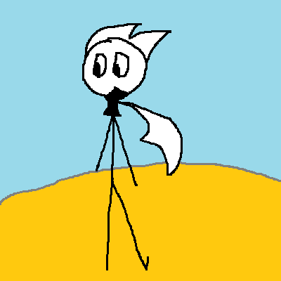
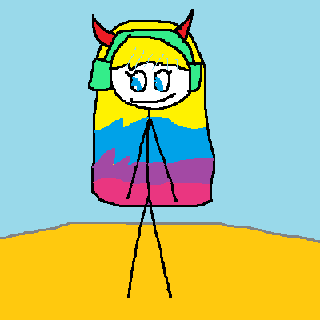
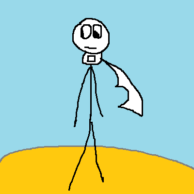
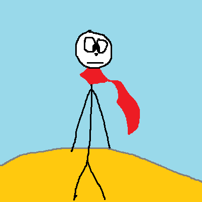

第146篇 日记
2025年12月15日 多云转阴 Mon.
日常生活：“爱乌及屋”
亿口秋溺(Ikyo Chyonny)和他的朋友：
|

亿口秋溺(Ikyo Chyonny)[1] |

亿口玖(Ikyo Kiku)[2] |

亿口小锐(Ikyo Ri)[3] |

亿口叶子(Ikyo Yuki)[4] |
亿口秋溺是我们的死对头！我、许梓浩、李钧宸、周宏宇都不喜欢他。
今天早上，我在食堂吃早餐。我遇到亿口玖了。她看到我，就对我竖了个中指（竖中指是鄙视的意思）。我是很不喜欢亿口秋溺的。见到亿口玖，我也感到不舒服。
此时把亿口秋溺比作“乌”，那么他的朋友，就比作“屋”。这就是“爱乌及屋”。
注释：